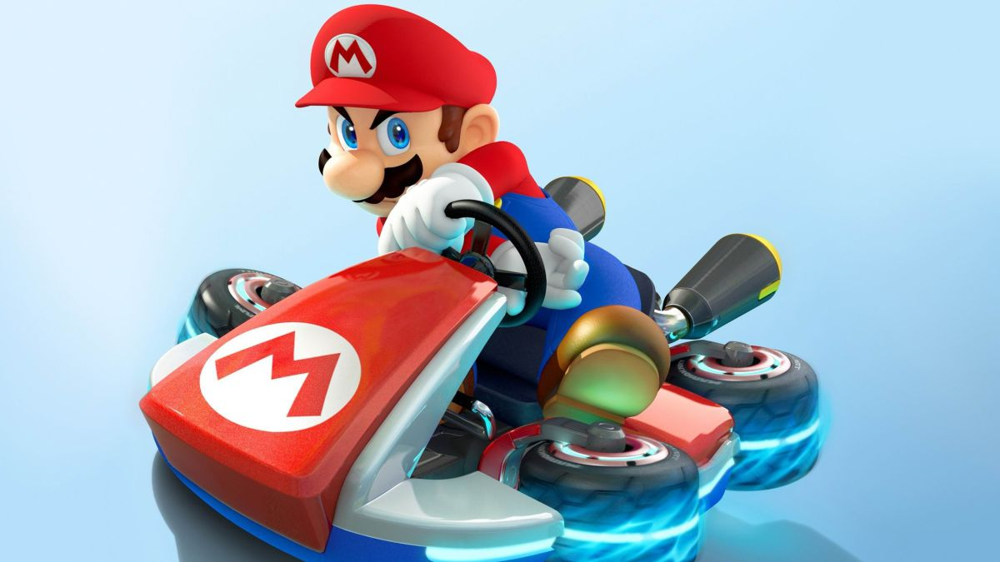
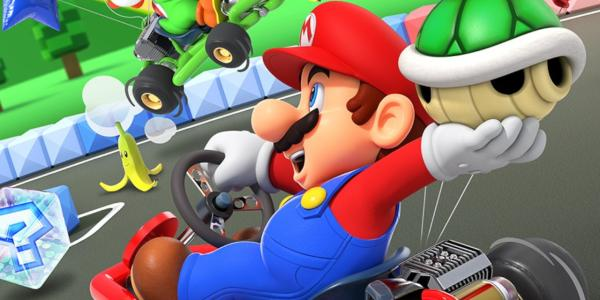

Origenes del Mario Kart (año 1990)Mario kart en el año 1995Mario Kart en el año 2015

Mario Kart en la actualidadOrigenes del Mario Kart (año 1990)

Mario kart en el año 2009Mario Kart en el año 2015Mario Kart en la actualidadOrigenes del Mario Kart (año 1990)Mario kart en el año 2008Mario Kart en el año 2015Mario Kart en la actualidad